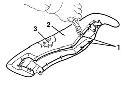

7050A49 One-piece backrest attachment DEVICE for (second row), side seat left or right - R.R.
- Path
- Procedures > 70 FITTINGS > 7050 REAR SEATS > 7050A rear seat assembly > 7050A49 One-piece backrest attachment DEVICE for (second row), side seat left or right - R.R.
- Kind
- repair procedure (removal / refitting; the operation number is the code)
- Applies to
- all engines; all production periods
- Interactive page
- https://sloeber94.github.io/elrnDB-a156/en/#/3238930
Applies to: all engines; all production periods; only with equipment: Station Wagon
 Removing
Removing
 Refitting
Refitting1. Cut the rings which anchor the cover to the frame.
2. Remove the cover.
3. If necessary, remove the non-fabric fabric.

Applies to: all engines; all production periods; only with equipment: Station Wagon
Refitting
RemovingCheck that the rear side cover is intact and shows no signs of damage.
Place the non-fabric fabric in position.
Place the cover in position and using the special tool, clamp the anchor rings to the frame.
 | Name | Country |
|---|---|---|
- | Pliers for metal points | 1.878.017.001 |